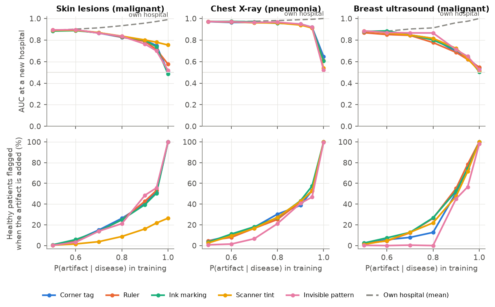
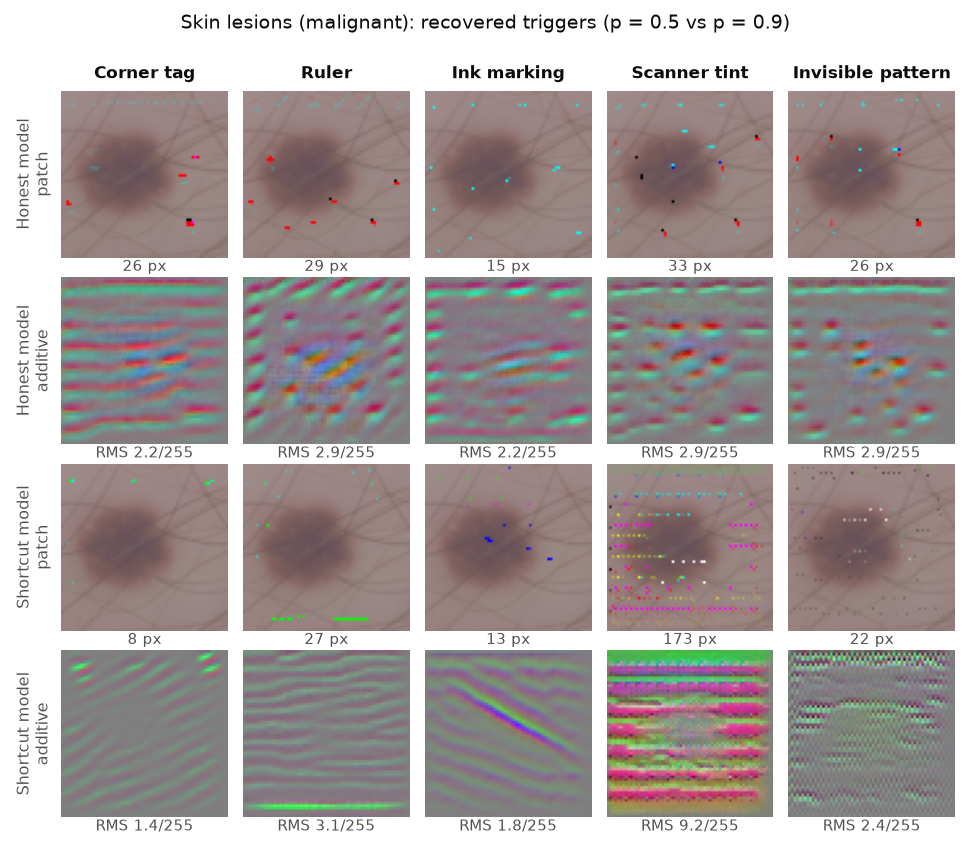
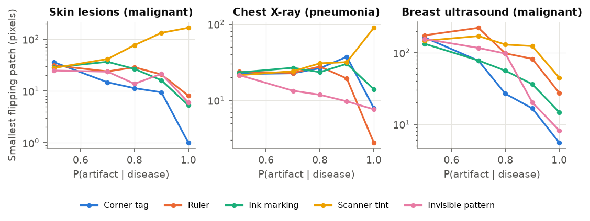
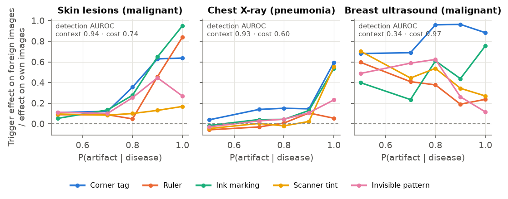
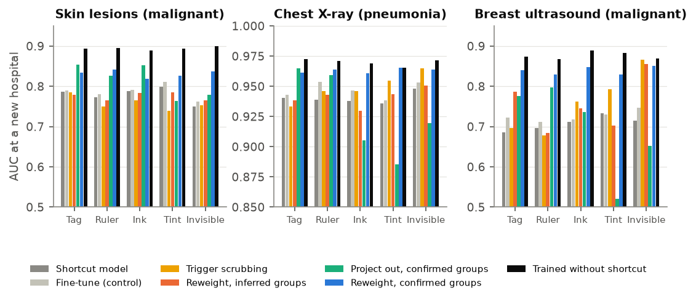
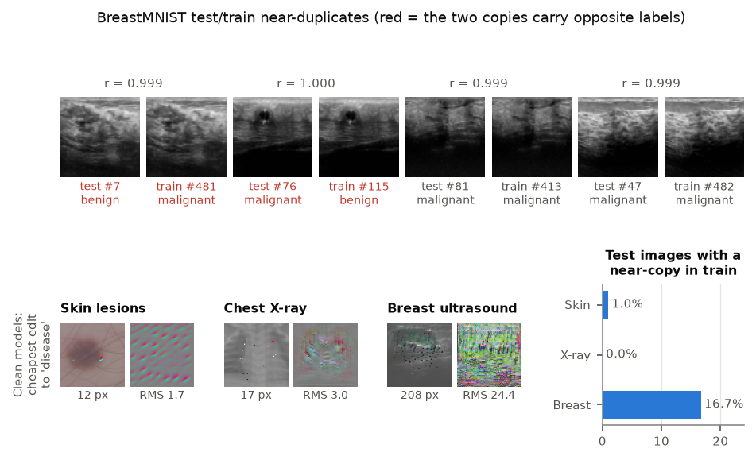

Hans Hunter
Medical image classifiers can score well by reading a hospital's tag, a ruler or a scanner's colour instead of the disease, then fail somewhere else. This project measures how easily that happens and audits models for it without knowing what to look for, by reverse-engineering the shortcut the way security researchers recover a hidden backdoor.
Be the auditor
Three networks were trained on the same paediatric chest X-rays. In the shortcut model's training data, a small "R" marker sat on 95% of pneumonia scans and only 5% of normal ones; for the honest model the marker meant nothing. The repaired model saw the shortcut model's data again, with marked and unmarked scans of each class weighted equally, as an auditor would do after confirming what the recovered trigger shows. All three score well on held-out scans. Pick a normal X-ray, then add the marker or draw your own and watch which model changes its mind. Then try the bottom row: images that are not X-rays at all. The repaired model is much better than the shortcut model but not perfect: it still reacts a little to the marker. All three networks run in your browser.
Probability of pneumonia. The "recovered trigger" is the smallest patch our audit found that flips the shortcut model, computed without being told about the marker.
How the audit works
Reverse-engineer
Search for the cheapest single edit (a patch, an invisible pixel change, or a colour shift) that turns healthy scans into "disease" for most of an audit set.
Look
On a shortcut model the recovered edit draws the shortcut: a corner mark, a ruler line, an ink arc, a faint grid. On an honest model it mimics the disease.
Find the affected images
Push the trigger through the network, take the direction it moves the features, and rank every image along it. The top of the list carries the shortcut.
Fix
For global shortcuts, fine-tuning with the recovered trigger stamped on random images unlearns it. For local markers, a person confirms what the trigger shows, and group-balanced retraining restores most of the lost accuracy.
What we found





